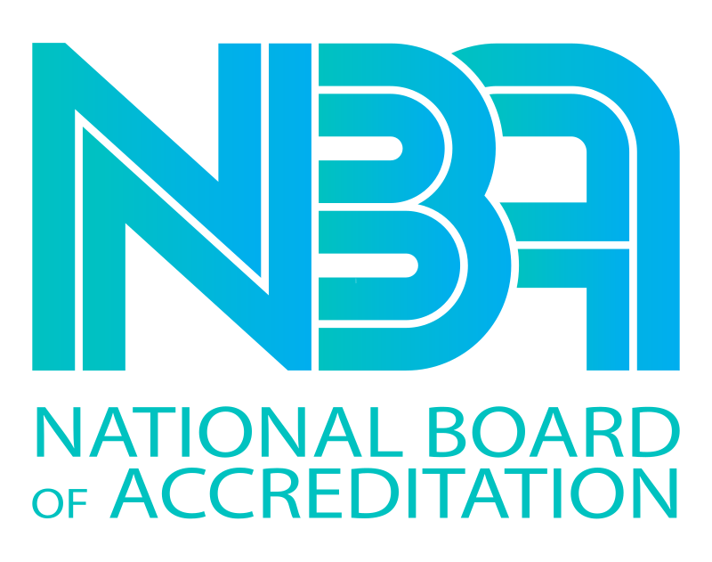
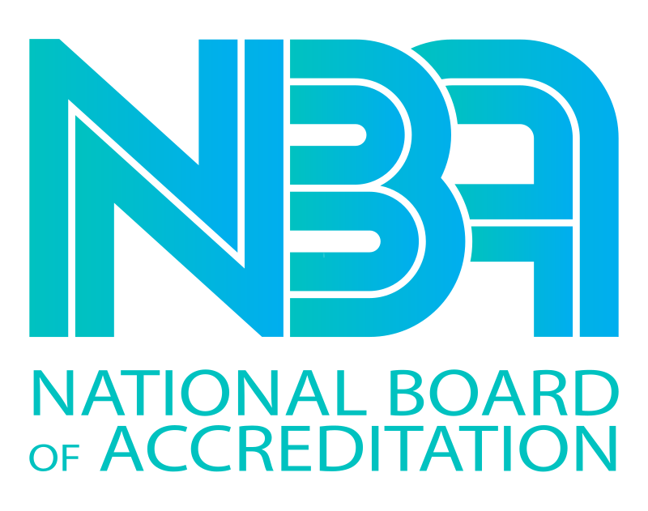
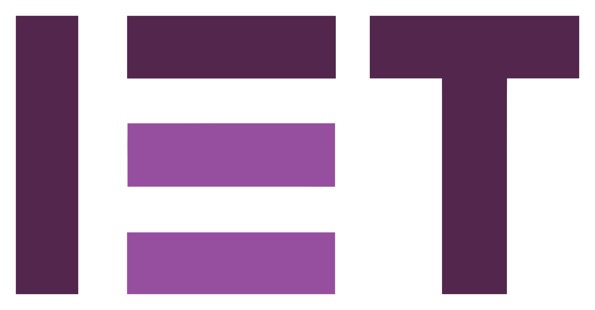
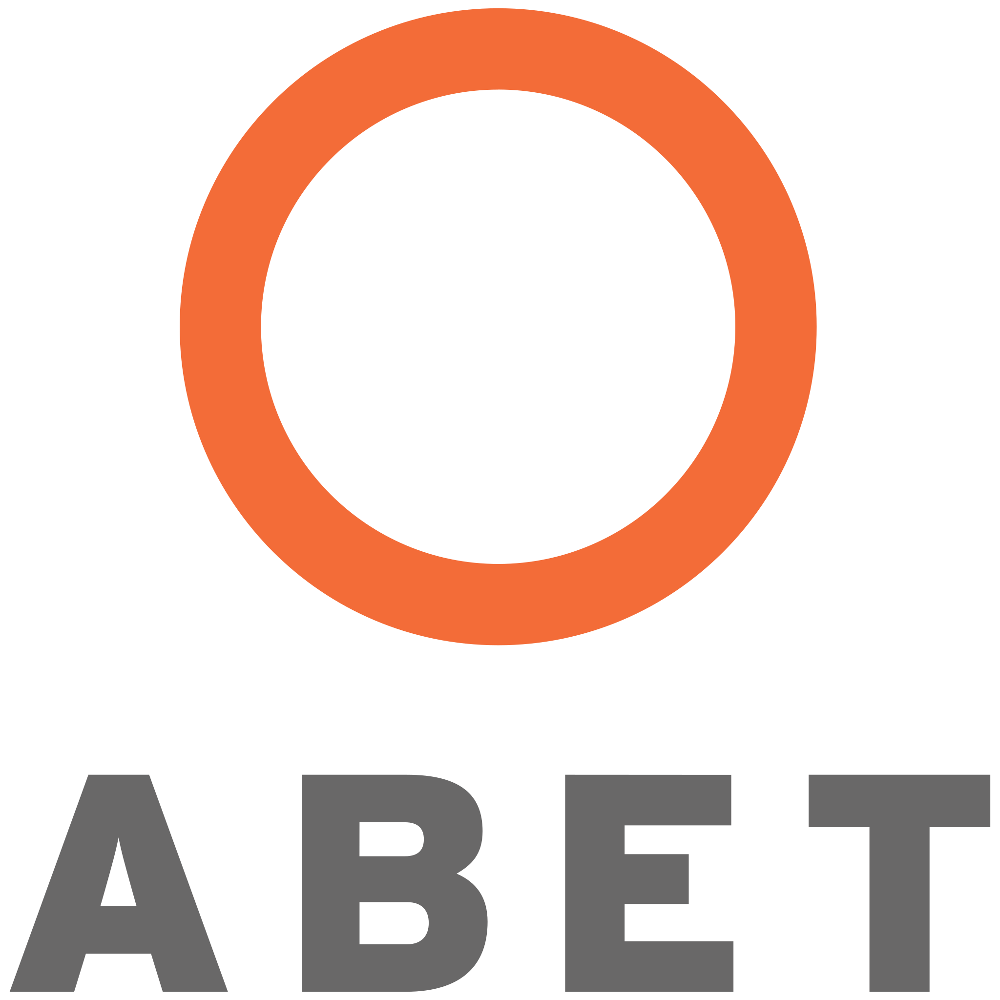
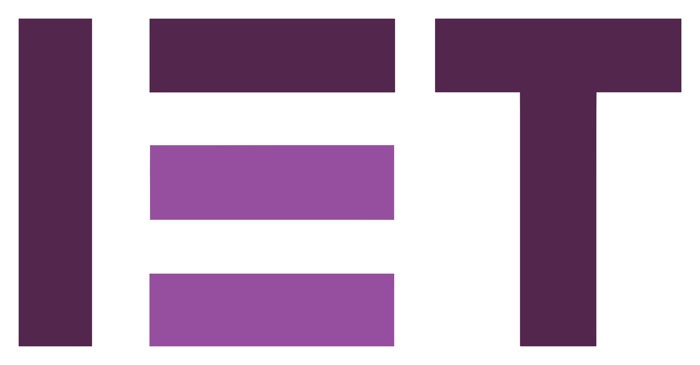
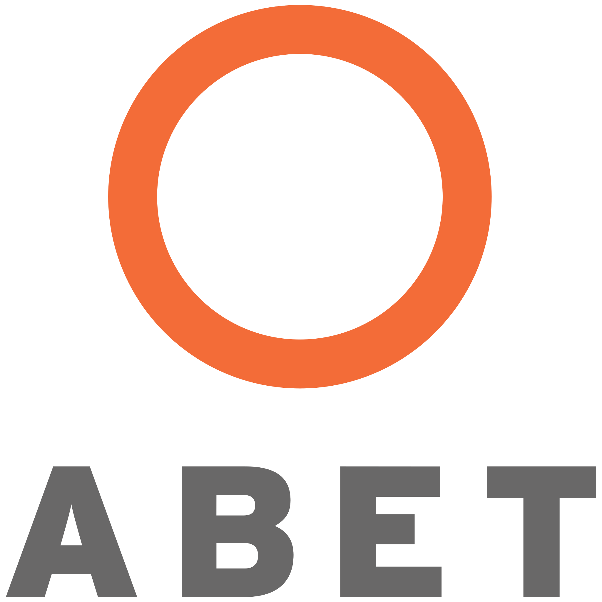

Internal Quality Assurance Cell
Championing a culture of excellence, innovation, and continuous improvement across all facets of KIIT Deemed to be University. Ensuring quality and accountability for all stakeholders.
Discover IQACAbout KIIT Deemed to be University
A leading institution dedicated to academic excellence and innovation.
Kalinga Institute of Industrial Technology (KIIT)
Established: 1992
Type: Private Deemed-to-be University
Location: Bhubaneswar, Odisha, India
Student Strength: Approx. 40,000 (UG & PG)
Affiliations: UGC, NAAC, ACU
Official Website: kiit.ac.inRankings & Recognition
QS Asia University Ranking 2025: 257th
NIRF Overall Ranking 2024: 28th
KIIT is consistently ranked among India's top universities, reflecting its commitment to quality education, research, and holistic development.
Commitment to Society
Beyond academics, KIIT is known for its significant contributions to social causes through its sister organizations, KISS (Kalinga Institute of Social Sciences), which provides free education from KG to PG for indigenous children.
IQAC at KIIT-DU
The Internal Quality Assurance Cell (IQAC) at KIIT Deemed to be University is the cornerstone of our commitment to continuous quality enhancement and institutional excellence.
Our Vision
To ensure continuous improvement in the entire operations of the institution and assure stakeholders of the accountability of the institution for its own quality and probity.
Visit IQAC WebsiteKey Functions of IQAC:
- Development and application of quality benchmarks.
- Facilitating the creation of a learner-centric environment.
- Arrangement for feedback responses from students, parents, and other stakeholders.
- Dissemination of information on various quality parameters.
- Organization of inter and intra-institutional workshops and seminars on quality-related themes.
- Documentation of various programs/activities leading to quality improvement.
- Acting as a nodal agency for coordinating quality-related activities.
- Preparation of the Annual Quality Assurance Report (AQAR) to be submitted to NAAC.
Key IQAC Reports & Documents
Access crucial documents that outline our quality initiatives, assessments, and enhancement measures.
Self Study Report (SSR)
Comprehensive report detailing the institution's functioning and quality initiatives submitted for accreditation.
View SSRAnnual Quality Assurance Reports (AQAR)
Yearly reports submitted to NAAC highlighting the quality enhancement measures undertaken by the institution.
Access AQARsStakeholder Feedback Reports
Analysis of feedback from students, faculty, and other stakeholders to improve institutional processes.
Read FeedbackRecent IQAC Initiatives & Events
Stay updated with the latest workshops, seminars, and quality enhancement activities spearheaded by KIIT IQAC.
Faculty Enrichment: Digital Transformation & Emerging Technologies
A platform for knowledge sharing, skill development, and networking to harness digital transformation for enhanced teaching and research.
Learn More →Academic Empowerment Initiative 2023-24
Inaugural ceremony involving eminent academicians to evaluate school functioning and share insights for academic year 2023-24.
Discover More →Viksit Bharat@2047 Initiatives
Nine events including workshops and seminars to create awareness and brainstorm ideas for a developed India by 2047.
Explore Activities → Project Expo • 6th December 2024
Project Expo • 6th December 2024
K-I3 Fest : Frontier Technologies for Viksit Bharat @ 2047
Organized by Dean's Gold Klub & IQAC
Get Details →Accreditations & Recognitions
KIIT's commitment to quality is reflected in its various national and international accreditations and rankings, underscoring our dedication to maintaining the highest standards in education.
 

 


